本章学习目标（Objectives）
- 理解骨骼的层级框架（Frame Hierarchy）与 to-root 变换；
- 掌握蒙皮网格、绑定姿势、偏移变换等概念；
- 实现顶点混合（vertex blending）让关节平滑弯曲；
- 从文件加载骨骼与关键帧动画，驱动角色动起来。
全书的压轴章：把数学、渲染、四元数全部用上，让一个蒙皮角色真正"动起来"。
23.1 层级框架（Frame Hierarchies）
骨骼是树：根（髋）→ 脊柱 → 头/四肢 → 手指。移动父骨骼，所有子孙跟着动——每根骨骼的变换由"父链"累积：toRoot 变换 = toParent(自身) × 父 toRoot（递归到根）。书中用树的图 + 简单层级示例讲解计算顺序（从根深度优先遍历即可）。多根/兄弟分支按同样的 toParent 逻辑串联。
23.2 蒙皮网格（Skinned Meshes）
角色网格 = "皮肤"，骨骼在皮肤内部（顶点大多不在骨骼上）。引入两个关键变换：
- 绑定姿势（bind pose）：建模时角色摆的姿势（T-pose 等），此时记录每根骨骼的世界变换（bind 变换）；
- 偏移变换（offset transform）：把顶点从"绑定姿势空间"变回"骨骼本地空间"：offset = toRoot(bind)⁻¹；
- 蒙皮流程：顶点先乘 offset 回骨骼本地 → 再乘骨骼当前的 toRoot → 顶点便"粘"在骨骼上随骨骼移动。两者相乘的最终矩阵叫最终变换，每帧计算填入"矩阵调色板（matrix palette）"传给着色器。
23.3 顶点混合（Vertex Blending）
肘部/膝盖这类关节：若顶点只属于一根骨骼，弯曲处会撕裂出"裂缝"。解决：关节附近的顶点同时受多根骨骼影响，按权重混合：
顶点属性附带：骨骼索引（最多 4 根）+ 权重。着色器里用索引查矩阵调色板、加权求和——这就是蒙皮着色器的核心。混合让关节处皮肤"拉伸过渡"，书中对比图非常直观。
// 蒙皮顶点结构（节选） struct SkinnedVertex { float3 Pos; float3 Normal; float2 Tex; float3 Weights; // w0 w1 w2（w3 = 1−Σ） BYTE BoneIndices[4]; // 受哪些骨骼影响 }; // VS 里（简化） float4 pos = mul(float4(vin.Pos,1), gBoneTransforms[vin.Indices[0]]) * vin.Weights.x + mul(float4(vin.Pos,1), gBoneTransforms[vin.Indices[1]]) * vin.Weights.y + ...;
23.4 从文件加载动画数据（Loading Animation Data from File）
书中自定义 .m3d 文本格式（含骨架、材质、子网格、动画片段），讲解如何解析：骨骼层级（父子索引）、每骨骼的关键帧（时间 + 位移 + 四元数旋转 + 缩放）、每个顶点的骨骼索引权重。运行时：当前时间落在哪两个关键帧之间 → 对位移 lerp、对旋转用四元数 slerp（第 22 章的直接应用）→ 插出中间姿势。
23.5 角色动画演示（Character Animation Demo）
Skinned Mesh demo：加载带骨骼的角色，循环播放走路动画，骨骼链可见地带动皮肤平滑变形。实现清单：每帧更新 toRoot → 计算最终变换 → 填调色板常量缓冲 → 蒙皮 VS 绘制。至此全书技术闭环：数学（1–3、22）→ 管线（5–7）→ 光影细节（8–11、18–21）→ GPU 编程（12–14）→ 动画（15、22–23）。
本章小结
- 骨骼树 + toParent/toRoot 变换 = 层级动画。
- 蒙皮 = offset 变换（回绑定骨骼空间）+ 当前 toRoot；最终变换每帧入调色板。
- 顶点混合（≤4 骨骼 + 归一权重）解决关节撕裂。
- 关键帧插值：位移 lerp、旋转 slerp。
🖼️ 原书插图（12 张，点击展开）
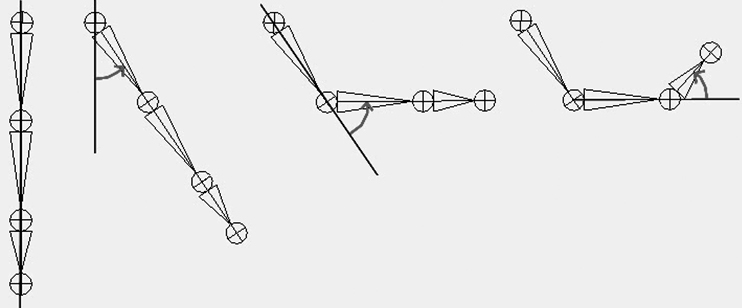
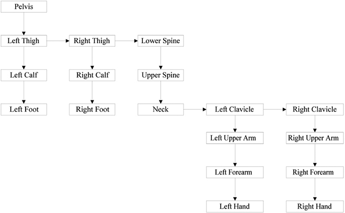
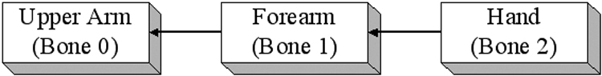
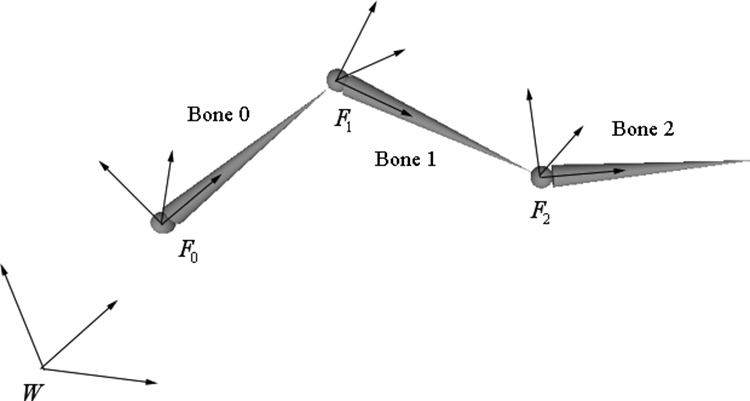
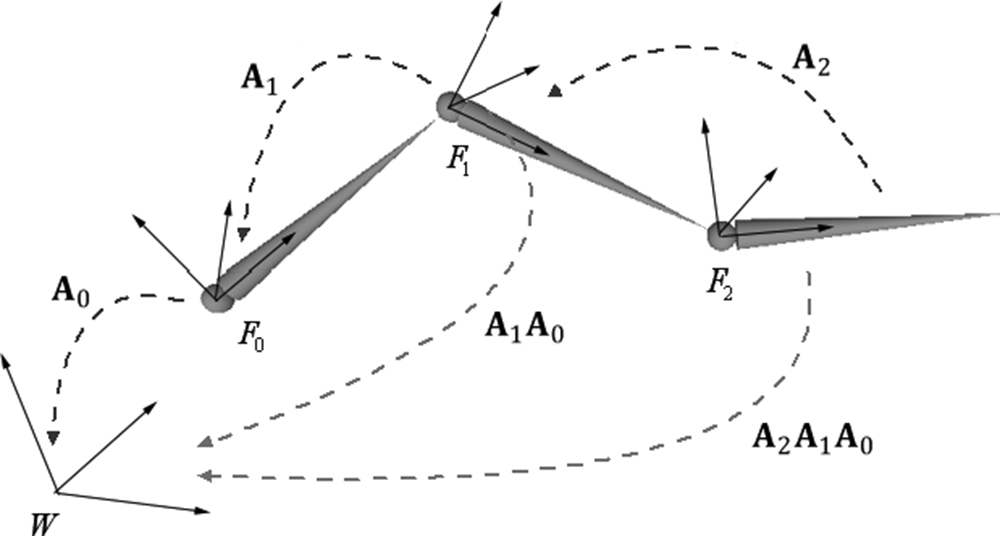
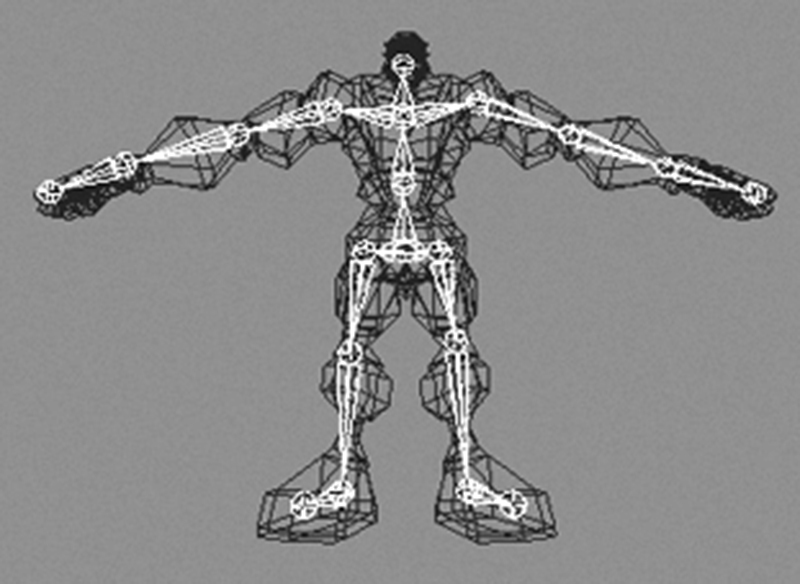
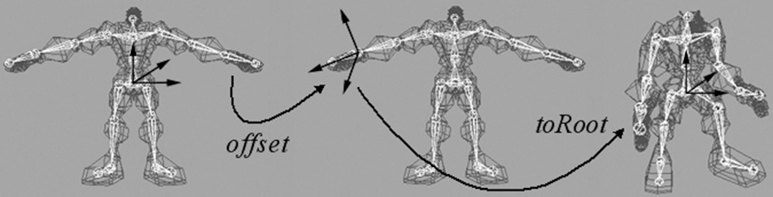
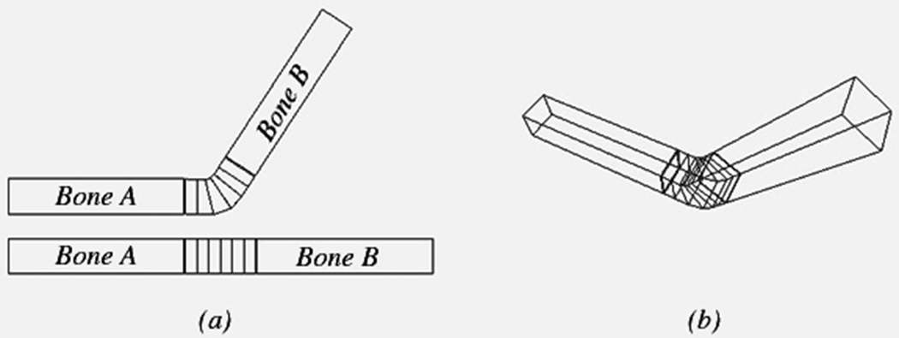
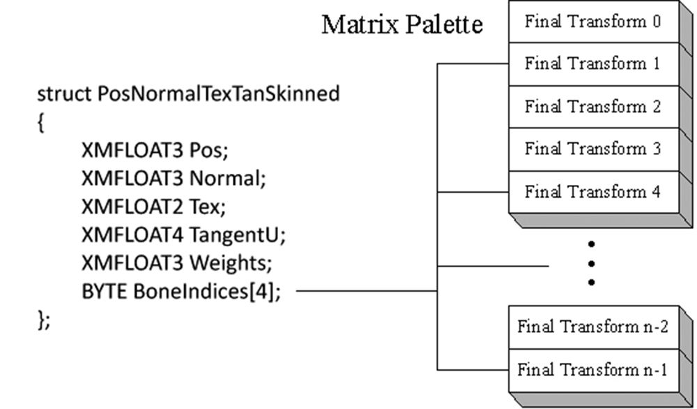
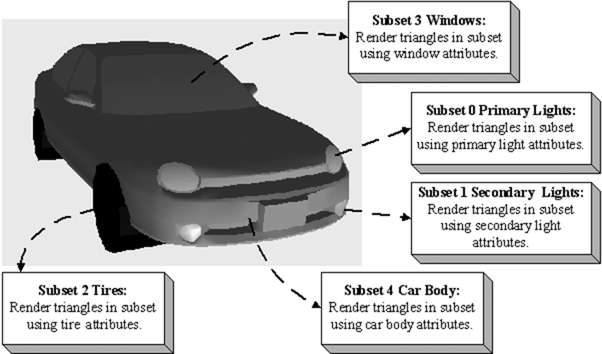
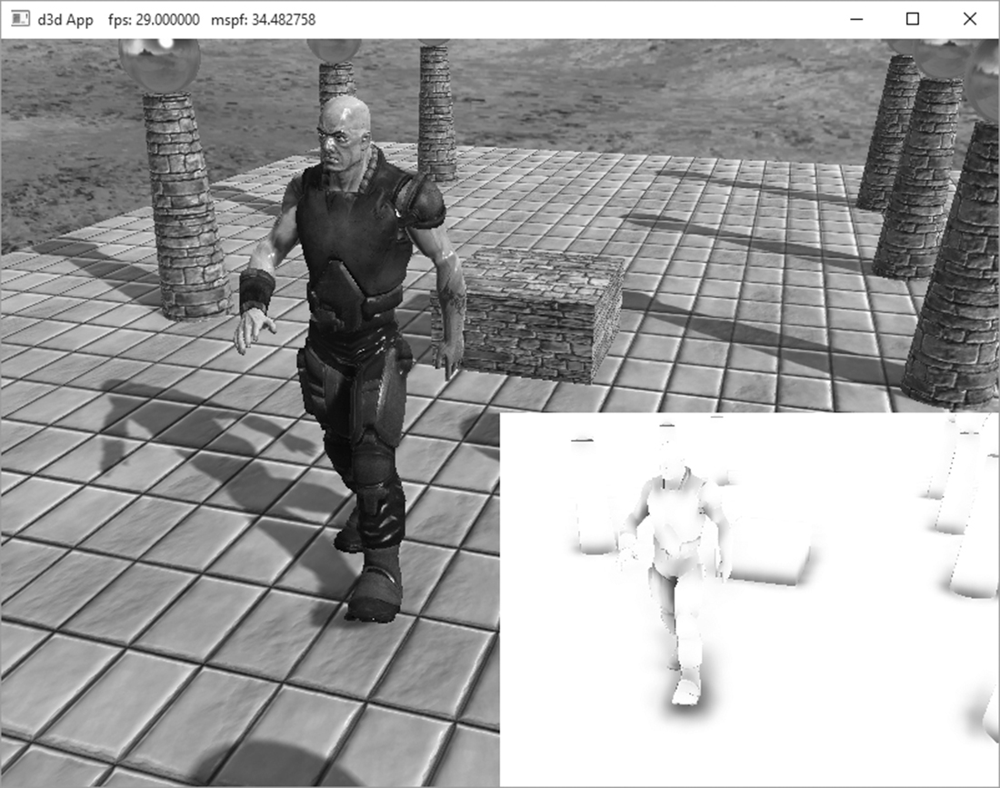
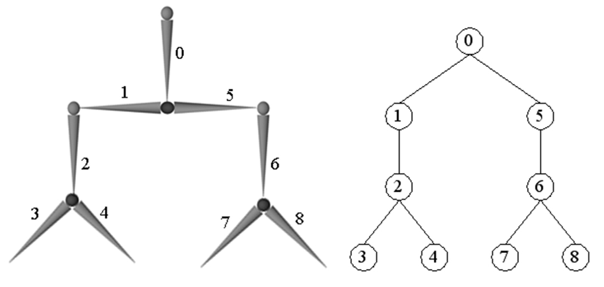